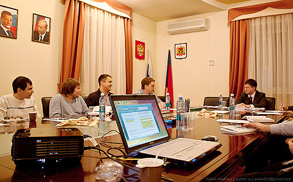
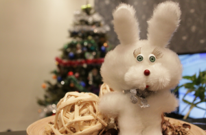

Вчера в помещении технопарка состоялась встреча заместителя губернатора Кемеровской области Дмитрия Исламова с кемеровскими блогерами.
Сам технопарк для меня явление не очень понятное. И от мысли о нецелевом использовании бюджетных денег при слове «технопарк» я отделаться пока не могу. Ну да ладно. Как минимум один раз польза от его существования все же вышла.
Вообще в моем понимании блогер это человек, который не просто ведет сетевой дневник. В таком случае блогерами можно называть каждого второго. Блогер в моем понимании не просто несколько раз пишет, что он покушал и почитал. Для меня блогер это тот человек, который посредством своих записей в блоге способен оказывать влияние на людей, причем желательно чтобы их количество исчислялось хотя бы сотнями. А таких в городе Кемерово пока нет.
Ну что имеем то имеем. И на встречу в Дмитрием Исламовым смогли прийти все кто захочет. В их числе были и представители городских сайтов вроде меня и Максима Колпакова (a42.ru), сеошники-манимейкеры, вроде Алексея (seokemerovo.ru), держащий руку на пульсе Владимир Куклин (aradel.ru). Были желающие заявить свою активную гражданскую позицию оппозиционеры любой действующей власти (одного из них правда сбила машина), был человек называющий себя интернет-евангелистом. В общем публика довольно разношерстная, но все же что-то объединяющее нас на встрече присутствовало. Может быть это был сам Дмитрий.

Началась встреча с короткого знакомства, растянувшегося на 30 минут. Затем последовала конструктивная часть. Нам показали интернет-сайт администрации области и попросили «покритиковать». От нас поступило предложение сделать сайт поближе к народу, например посредством введения комментариев новостей. Лично у меня складывается мнение, что на сайт АКО в раздел пресс-релизы заходят только сами сотрудники АКО и журналисты. Введение возможности комментариев конечно огромный шаг, но кроме большой головной боли связанной с модерированием комментарии дадут жителям области понять что их слушают. Власти же при минимальном количестве посредников узнают, что о их деятельности думают, те за чью жизнь они отвечают. Хотя не уверен, что «вертикали власти» это необходимо.
По словам Дмитрия Исламова на сегодняшний день все государственные учреждения в той или иной степени имеют некие интернет-сайты. Правда первая же попытка выйти на сайт администрации Белова ни к чему хорошему не привела, и тема была переведена в русло оказания государственных услуг посредством централизованных систем и информационных центров. Чиновники рассказали, что Кемеровская область не то, чтобы впереди всей России, но точно не отстает. В начале будущего года в Юрге состоится открытие первого в Кузбассе такого информационного центра, где в одном помещении можно будет получить весь комплекс услуг, предоставляемых государством (выписки всех возможных справок, регистрации браков-рождений и т.п.). В городе Кемерово в ближайшее время будут установлены 10 подключенных к общим базам инфоматов, похожих на мультикассы, которые тоже будут предоставлять населению информационные услуги.

Время встречи подходило к концу, все друг друга поблагодарили, а Дмитрий Исламов высказал предположение, что такие встречи могут быть регулярными. Снегурочка подарила всем присутствующим по небольшой мягкой игрушке, сделанной учениками художественной школы. (икренне надеюсь, что ученики шили их для души, а не в рамках выполнения госзаказа на 5000 штук за одну неделю)
Игрушка симатичная, сыну очень понравилась. Канал «Вести» взял у нескольких присутствующих комментарии, довольные мы поехали вставать в пробки.